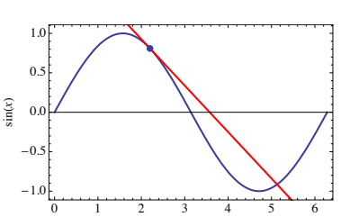
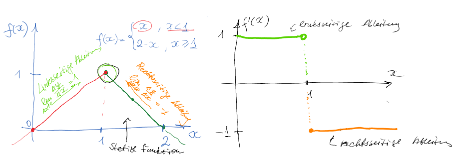
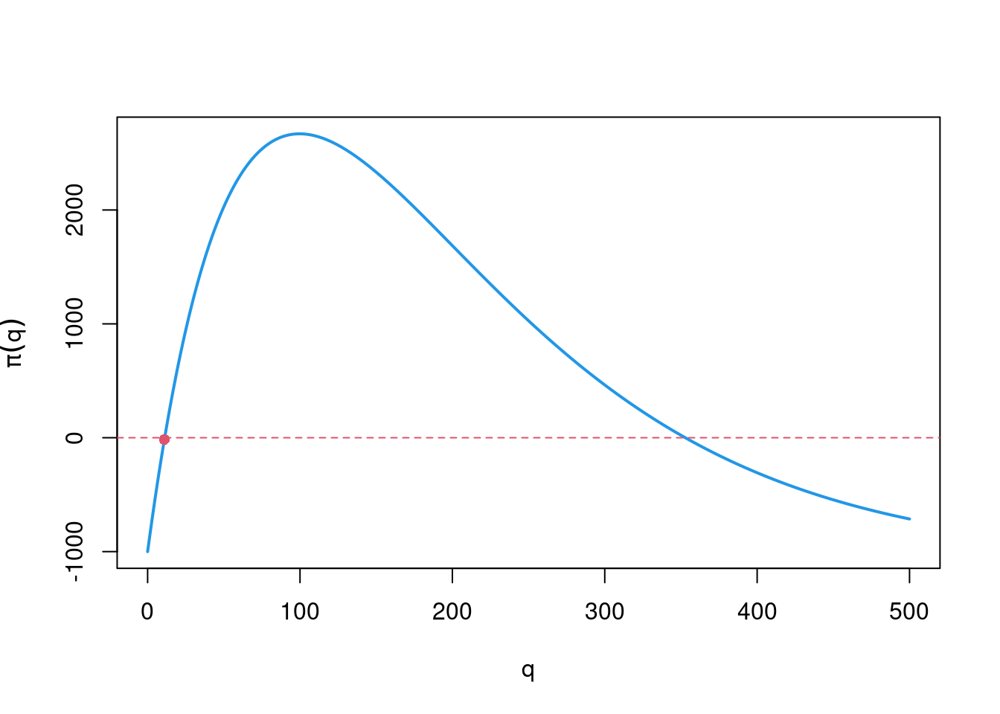

Chapter 5 Differential calculus
The derivation of a function describes the change in one variable in response to the change in another variable.
Examples in economics:
How does a company change its production level as a result of increased costs?
How does a change in the money supply affect inflation?
How can I structure my consumption in such a way that my utility is at its maximum?
Implicitly this question is covered by the functional link \(y = f (x)\). Explicitly this is expressed as the influence of a change in \(x\), written as \(\Delta x\), on the change in \(y\), written as \(\Delta y\).
In economics, this type of analysis is also called limit analysis. For example, profit maximization: “A profit-maximizing firm increases its output until marginal revenue (\(\Delta R\)) equals or exceeds marginal cost (\(\Delta C\)).”

5.1 Definition of the tangent line
A colloquial description of the tangent line is as follows:
“A tangent line is a straight line that touches a function at only one point.”
In the graph, the line \(l_P\) only touches the function at the point \(P\) without intersecting the function at any other point.
For a smooth function the slope of the tangent is identical to the slope of the function at the point of contact.
The gradient of the tangent in \(P\) corresponds to the derivative of \(y = f (x)\) at the point \(P\).
The above statement covers well our general understanding of the tangent, but does not serve as a definition.
The tangent may intersect the function at a point farther away; therefore we have to restrict ourselves to suitable neighborhoods of the point \(P\).

In some cases, the tangent can even intersect the function, as here in the example \(y = x^3\) at \(x = 0\).
5.1.1 Secant and tangent lines
We therefore turn to a formal derivation of the derivative concept. First, we define other concepts that play a role in defining a tangent.
Let \(P = (x_1, f (x_1))\) and \(Q = (x_2, f (x_2))\) be two points in the graph of the function \(f\) . The secant of \(P\) and \(Q\) is the straight line connecting \(P\) and \(Q\).
- The slope of the secants, called the difference quotient, is
\({m}_{PQ}= \frac{f(x_2)-f(x_1)}{x_2-x_1}=: \frac{\triangle y}{ \triangle x}\) ,
where \(\Delta y = f (x_2) − f (x_1)\) and \(\Delta x = x_2 − x_1\).
5.1.2 From the secant to the tangent line
Now fix \(P = (x_0,f (x_0))\) and consider a sequence of values \(({x_n})_{n \in \mathbb{N}}\), which against \(x_0\) converges.
This is equivalent to the formulation that \(\Delta x_n = x_n − x_0\) converges to \(0\).
If the slopes of the secants exist for every possible such sequence and these slopes converge to a limit \(m^*\), then the tangent is the straight line with slope \(m^*\) that touches \(P\).
Definition 5.1 (Tangent line) Let \(f\) be defined on an open interval around \(x_0\).
If
\(m^* = \lim _{ \triangle x \rightarrow 0} \frac{f(x_0+ \triangle x) -f(x_0) }{ \triangle x}\)
exists, then the straight line through \((x_0,f (x_0))\) with slope \(m^*\) is the tangent of \(f\) at the point \(x_0.\)
Example 5.1 (secant and tangent) Let \(f (x) = x^2\) , \(P = (2, 4)\) and \(Q=(4, 16)\).
One easily checks that \(\Delta x = 2\) and \(\Delta y = 12\), so that the slope of the secants is \(\Delta y/\Delta x = 12/2 = 6\).
If one chooses \(Q' = (5,25)\), the secant slope is \(\Delta y/\Delta x = 21/3 = 7\).
Now choose the sequence \(\Delta x_n = 1/n\), \(n \geq 1\).
Then: \(\Delta x_n \rightarrow 0\), if \(n \rightarrow \infty\).
For any point \(x\) we determine the slope of the tangent:
\[\begin{align*}\frac{f(x+ \triangle x_n)-f(x)}{ \triangle x_n} &= \frac{(x+1/n)^2-x^2}{1/n} \\ & = \frac{x^2+2x/n+1/n^2-x^2}{1/n}\\ &= 2x + \frac{1}{n}, \end{align*}\]
and
\(\lim_{ \triangle x \rightarrow 0} \frac{f(x+ \triangle x_n)-f(x)}{ \triangle x_n} = \lim_{n\rightarrow\infty}(2x+1/n) = 2x\) (= the derivative of \(f(x)=x^2\) ).
5.2 Definition of the derivative
Definition 5.2 (Derivative) The derivative (the differential quotient) of a function \(f\) at the point \(x\), written as \(f' (x)\), is the slope of the tangent at that point:
\(f'(x)= \lim_{ \triangle x \rightarrow 0 } \frac{f(x+ \triangle x) - f(x)}{ \triangle x}\) .
The so-called Leibniz notation of the derivative is \(f'(x)= \frac{df(x)}{dx}\),
where the differential operator \(d\) expresses an infinitesimally small change.
Definition 5.3 (Differential) Let \(f\) be a function with derivative \(f'\). The differential of \(f\) at \(x\) is \(df (x) = f ' (x) dx\).
The differential expresses that \(f\) changes at the point \(x\) approximately by \(f' (x) dx\), where - to put it bluntly - \(dx\) is an infinitesimal change of \(x\) denotes and \(f'\) specifies the direction of change of \(f\).
Example 5.2 (Total cost and marginal cost) A firm’s total cost function \(y \mapsto C( y )\) expresses costs as a function of the number \(y\) units produced.
The ratio \(\frac{ \triangle C}{ \triangle y} = \frac{C(y+ \triangle y) - C( y )}{ \triangle y}\) reflects the average additional cost per unit if additional \(\Delta y\) units are produced.
The limit of this ratio when \(\Delta y \rightarrow 0\), is the instantaneous rate of change; in economics, this rate represents the marginal cost (or marginal cost): \(\lim_{ \triangle y \rightarrow 0 \ } \frac{ \triangle C}{ \triangle y} = \lim_{ \triangle y \rightarrow 0 \ } \frac{C(y+ \triangle y) - C( y ) }{ \triangle y} = C'( y )\)
Example of a linear cost function:
In practice, the assumption of a linear cost function, i.e. constant marginal costs, is often unrealistic (see earlier example of cost functions). Instead, higher production often leads to higher marginal costs (at least in the short run).
This is expressed by a quadratic cost function, for example:

5.3 Differentiability
Definition 5.4 (Differentiability) The function \(f\) is differentiable at the point \(x\) if it is defined in an open neighborhood of \(x\) and if
\[ \lim_{ \triangle x \rightarrow 0 \ } \frac{ f(x+ \triangle x)-f(x)}{ \triangle x } \]
exists and is finite.
A function is said to be differentiable if it is differentiable anywhere in its domain.
If \(f\) is differentiable in \(x\), then the left derivative and the right derivative exist and take the same value:
\(\lim_{ \triangle x \uparrow 0 \ } \frac{ f(x+ \triangle x)-f(x)}{ \triangle x } = \lim_{ \triangle x \downarrow 0 \ } \frac{ f(x+ \triangle x)-f(x)}{ \triangle x }\).
Example 5.3 (Differentiability) We consider the function \(f(x)=\begin{cases} x, &if~ x<1 \\ 2-x, &if \ x \geq 1 \end{cases}\).
Although the function is continuous at the point \(x = 1\), it is not differentiable at this point.
Because: At the point \(x = 1\) applies \(\lim_{ \triangle x \uparrow 0 } \frac{ f(1+ \triangle x)-f(1)}{ \triangle x } = \lim_{ \triangle x \uparrow 0 } \frac{ 1+ \triangle x-1 }{ \triangle x } =1\)
and
\(\lim_{ \triangle x \downarrow 0 } \frac{ f(1+ \triangle x)-f(1)}{ \triangle x } = \lim_{ \triangle x \downarrow 0 } \frac{ (2 -(1+ \triangle x))-(2-1) }{ \triangle x } = -1\).
Details
We consider the connection between differentiability and continuity.
Theorem 5.1 (Differentiability and Continuity) If a function \(f\) is differentiable at \(x\), then it is also continuous at \(x\).
The converse statement is generally not true, as the previous example shows.
One can equivalently say: Continuity is a necessary but not a sufficient condition for differentiability.
We extend the notion of differentiability to closed intervals.
Definition 5.5 (Differentiability on an interval) A function \(f\) , defined on the interval \([a,b]\), is differentiable on \([a,b]\) if:
the right derivative for \(f (a)\) exists;
the left derivative for \(f (b)\) exists;
\(f\) is differentiable on the open interval \((a,b)\).
5.4 Derivation rules
With the help of the following rules we can determine derivations concretely (always assuming differentiability).
Theorem 5.2 (derivation rules) In the following, let \(c\), \(m\), \(n\) and \(b\) be constants.
\[\begin{equation*} \begin{array}[t]{lll} \hline \text{(function) type} & \text{function} & \text{derivation}\\\hline \text{constant function} & f(x)=c & f^\prime(x)=0\\ \text{linear function} & f(x)=mx + b & f^\prime(x)=m\\ \text{power function} & f(x)=x^n & f^\prime(x)=n\, x^{n-1}\\ \text{scaling} & g(x)=c\, f(x) & g^\prime(x)=c\, f^\prime(x)\\ \text{summation rule} & f(x)=g_1(x) + g_2(x) & f^\prime(x) = g_1^\prime(x) + g_2^\prime(x)\\ & f(x)=\sum_{i=1}^n g_i(x) & f^\prime(x) = \sum_{i=1}^n g_i^\prime(x)\\ \text{product rule} & f(x)=g(x)\, h(x) & f^\prime(x) = g^\prime(x) h(x) + g(x) h^\prime(x)\\ \text{chain rule} & f(x)=g(h(x))& f^\prime(x)=g^\prime(h(x))\, h^\prime(x)\\ \hline \end{array} \end{equation*}\]
\[\begin{equation*} \begin{array}[t]{lll} \hline \text{(function) type}\!\!\!& \text{function} & \text{derivation}\\\hline \text{ratio rule} & \displaystyle f(x)=\frac{g(x)}{h(x)}, h(x)\not=0 & \displaystyle f^\prime(x) = \frac{g^\prime(x) h(x) - g(x) h^\prime(x)} {(h(x))^2}\\ \text{inverse} & y=f(x)\text{, where }& \displaystyle (f^{(-1)})^\prime(y) = \frac{1}{f^\prime(x)} = \frac{1}{f^\prime(f^{(-1)}(y))}\\ & f^{(-1)}(y)=x \text{ exists } & \\ &\text{and } f^\prime(x)\not=0 & \\ \text{logarithm} & \ln (x) & \displaystyle\ln^\prime(x)=\frac{1}{x}\\ & \log_a (x) & \displaystyle\log_a^\prime(x)=\frac{1}{x\cdot \ln (a)}\\ \text{sine function} & \sin(x) & \sin^\prime(x)=\cos(x)\\ \text{cosine function} & \cos(x) & \cos^\prime(x)=-\sin(x)\\ \text{exponential function} & e^{x} & (e^{x})^\prime=e^{x}\\ & a^{x} & (a^{x})^\prime=a^{x}\ln (a)\\\hline \end{array} \end{equation*}\]
Proof
In general, derivations can be made via the definition of the differential quotient (definition 5.2) and already proven rules are determined.- Constant function \(f(x)=c\): The derivative is determined through \[\begin{equation*} f^\prime(x) = \lim_{\Delta x\rightarrow 0} \frac{f(x+\Delta x)-f(x)}{\Delta x} = \lim_{\Delta x\rightarrow 0} \frac{c-c}{\Delta x}=0. \end{equation*}\]
- For power functions \(f(x)=x^n\) we use the binomial formula \[\begin{equation*} (x+y)^n = \sum_{k=0}^n \binom{n}{k} x^{n-k} y^k \end{equation*}\] and received \[\begin{align*} \frac{(x+\Delta x)^n - x^n}{\Delta x} % &= \frac{\sum _{k=1}^n \binom{n}{k} x^{n-k} (\Delta x)^k} {\Delta x} % = \sum_{k=1}^n \binom{n}{k} x^{n-k} (\Delta x)^{k-1} \\% &= \binom{n}{1} x^{n-1} + % \underbrace{\sum_{k=2}^n \binom{n}{k} x^{n-k} (\Delta x)^{k-1}}_{\rightarrow 0 \text{ for } \Delta x\rightarrow0}= n\, x^{n-1} \end{align*}\]
- Product rule: For the product \(f(x)=g(x) h(x)\) we get where we used that: \[\begin{align*} \lim_{\Delta x\rightarrow 0} \frac{(g(x+\Delta x) - g(x)) h(x+\Delta x)} {\Delta x}&% = \lim_{\Delta x\rightarrow 0} \frac{(g(x+\Delta x) - g(x))} {\Delta x} \, \lim_{\Delta x\rightarrow 0} h(x+\Delta x) \end{align*}\]
- Chain rule (\(f(x)=g(h(x))\)): Write first \[\begin{equation*} \frac{g(h(x+\Delta x)) - g(h(x))} {\Delta x} % = \frac{g(h(x+\Delta x)) - g(h(x))} {h(x+\Delta x)-h(x)} % \cdot \frac{h(x+\Delta x)-h(x)} {\Delta x} % \end{equation*}\] For the first term applies \(\lim_{\Delta x\rightarrow 0} h(x+\Delta x)-h(x)=0\), so that \[\begin{equation*} \displaystyle \frac{g(h(x+\Delta x))-g(h(x))} {h(x+\Delta x)-h(x)} \rightarrow g^\prime(h(x)). \end{equation*}\] The second term converges to \(h^\prime(x)\).
- Quotient rule (\(\displaystyle f(x)=\frac{g(x)}{h(x)}\)): \[\begin{align*} \left(\frac{g(x)}{h(x)}\right)^\prime &= \left(g(x)) \frac{1}{h(x)}\right)^\prime \stackrel{\text{product rule}}= g^\prime(x) \frac{1}{h(x)} + g(x) \left(\frac{1}{h(x)}\right)^\prime \\% &= \frac{g^\prime(x) h(x)}{h(x)^2} + g(x) % \underbrace{ \left(h^{-1}(x)\right)^\prime.% } % _{\stackrel{\text{chain % rule, power %function}}=-1\cdot % h^{-2}(x) \cdot %h^\prime(x)}, \end{align*}\] For \(\left(h^{-1}(x)\right)^\prime\) we get with the Chain rule and the power rule: \[\begin{equation*} \left(h^{-1}(x)\right)^\prime = -1\cdot h^{-2}(x)\cdot h^\prime(x) = -\frac{h^\prime(x)}{h(x)^2}. \end{equation*}\]
- For the inverse we use \(y=f(x)\) and get with \(\Delta y=f(x+\Delta x)-f(x)\): \[\begin{align*} &\frac{f^{(-1)}(y+\Delta y) - f^{(-1)}(y)} {\Delta y} = \frac{f^{(-1)}(f(x)+f(x+\Delta x)-f(x)) - f^{(-1)}(f(x))} {f(x+\Delta x) - f(x)}\\ &= \frac{f^{(-1)}(f(x+\Delta x)) - f^{(-1)}(f(x))} {f(x+\Delta x)-f(x)} = \frac{\Delta x}{f(x+\Delta x)-f(x)} \rightarrow \frac{1}{f^\prime(x)} \end{align*}\]
- For the derivative of the logarithm, first note that that \(\ln (a^x)=x\cdot \ln(a)\), \(\ln(a/b)=\ln (a)-\ln (b)\) and that \(\displaystyle \lim_{n\rightarrow \infty} \left(1+\frac{x}{n}\right)^n=\text{e}^x\). Then: \[\begin{equation*} \ln^\prime(x)% = \frac{\ln(x+\Delta x)-\ln (x)} {\Delta x} % = \frac{1}{\Delta x} \ln \left(\frac{x+\Delta x}{x}\right)% = \ln\left(\left(\frac{x+\Delta x}{x}\right)^{1/\Delta x}\right). \end{equation*}\] Set \(\displaystyle n=\frac{x}{\Delta x}\) and note that \(n\rightarrow\infty\) if \(\Delta x\rightarrow 0\). With \(n\rightarrow\infty\): \[\begin{equation*} \ln\left(1+\frac{1}{n}\right)^{n/x}% = \frac{1}{x} \ln \left(1+\frac{1}{n}\right)^n % \rightarrow \frac{1}{x} \ln(\text{e}) = \frac{1}{x}, \end{equation*}\]
- Finally, for the exponential function we use, that \[\begin{equation*} \left(\ln(\text{e}^x)\right)^\prime = x^\prime=1, \end{equation*}\] and therefore, by applying the chain rule: \(\left(\ln\text{e}^x\right)^\prime=\frac{1}{\text{e}^x} (\text{e}^x)^\prime =1,\) from which \(\left(\text{e}^x\right)^\prime=\text{e}^x\) follows.
Example 4.1 (Production function and marginal productivity) Consider the production function \(TP(L) = L^a\) , \(a > 0\), which maps the input \(L\) (work) to the output \(TP (L)\). The marginal productivity is
\(MP (L) = dTP (L)/ \ dL = aL^{a−1}\) ; if
\(a > 1\), then \(MP (L)\) is increasing in \(L\),
\(a = 1\), then \(TP (L) = L\) and \(MP (L) = 1\),
\(a < 1\), then \(MP (L)\) falls in \(L\).

Example 5.4 (Marginal revenue with the product rule) The revenue (sales) is determined from the price of a good multiplied by the quantity sold, i.e. \(TR(q) = pq\).
A competing firm will assume the price to be constant (market price): \(\bar{p}\); the marginal revenue is therefore \(MR(q) = dTR(q)/dq = \bar{p}\).
From the point of view of a monopolist, quantity and price are determined by the demand function \(q = D(p)\) or by its inverse \(p = D ^{(−1)}(q) =: p(q)\).
The total revenue of the monopolist is
\(TR(q) = p(q) q\)
and the marginal revenue is
\(MR(q)=TR'(q)= \frac{dTR(q)}{dq} = \frac{dp}{dq}q + p(q) \frac{dq}{dq} = p' (q)q+p(q)\)
- Typically, \(p' (q) < 0\).
Example 5.5 (Average and marginal cost with quotient rule) The average function of a function \(f (x)\), \(x ≥ 0\), is given by
\(A(x)= \frac{f(x)}{x}\) .
The quotient rule gives
\(A'(x)= \frac{f'(x)x-1f(x)}{x^2} = \frac{1}{x} \left[ f'(x)-A(x) \right]\) .
with \(f'\) being the marginal cost.
Therefore:
If \(f' (x) < A(x)\), then \(A'(x) < 0\);
if \(f' (x) = A(x)\), then \(A' (x) = 0\) (Minimum);
if \(f' (x) > A(x)\), then \(A' (x) > 0\).

5.5 The rule of L’Hôpital
If \(f (x) → 0\) and \(g(x) → 0\) for \(x → a\), then existence and determination of the limit \(\lim _{x \rightarrow a} \frac{f(x)}{g(x)}\) not obvious at first.
Examples:
\(\lim _{x \rightarrow 1} \frac{x^2-1}{x-1} = 2\),
\(\lim _{x \rightarrow 0} \frac{ \sin x}{x} = 1\),
\(\lim _{x \rightarrow 0} \frac{ 1 - \cos x}{x} = 0\)
The first limit is easy to determine because
\(\frac{x^2-1}{x-1} = \frac{(x+1)(x-1)}{x-1} = x+1\).
The other two limits are not obvious.
In this situation, L’Hôpital’s rule is often very helpful.
Theorem 5.3 (The rule of L'Hôpital) Let \(f\) and \(g\) in \(x = a\) be differentiable functions with \(g' (a) \neq 0\) and
\(\lim _{x \rightarrow a} f(x) = 0\) and \(\lim _{x \rightarrow a} g(x) = 0\)
or
\(\lim _{x \rightarrow a} f(x) = \infty\) and \(\lim _{x \rightarrow a} g(x) = \infty\).
If \(\lim _{x \rightarrow a} \frac{f'(x)}{g'(x)}\) exists or if the limit is \(\pm\infty\), then it holds
\(\lim _{x \rightarrow a} \frac{f(x)}{g(x)} = \lim _{x \rightarrow a} \frac{f'(x)}{g'(x) }\) .
Exercise 5.1 (Limits with L'Hôpital's rule) Check the following limits using L’Hôpital’s rule:
\(\lim _{x \rightarrow 1} \frac{x^2-1}{x-1} = 2\),
\(\lim _{x \rightarrow 0} \frac{ \sin x}{x} = 1\),
\(\lim _{x \rightarrow 0} \frac{ 1 - \cos x}{x} = 0\)
Note: \(\sin' (x) = \cos(x)\) and \(\cos' (x) = − \sin(x)\).
Answer
\(\lim _{x \rightarrow 1} \frac{x^2-1}{x-1} = \lim _{x \rightarrow 1} \frac{(x^2-1)'}{(x-1)'} = \lim _{x \rightarrow 1} \frac{2x}{1} =2\),
\(\lim _{x \rightarrow 0} \frac{ \sin x}{x} = \lim _{x \rightarrow 0} \frac{(\sin \ x)'}{(x)'} = \lim _{x \rightarrow 0} \frac{\cos \ x}{1} =1\),
\(\lim _{x \rightarrow 0} \frac{ 1 - \cos x}{x} = \ \lim _{x \rightarrow 0} \frac{(1-\cos \ x)'}{(x)'} = \lim _{x \rightarrow 0} \frac{-(- \sin \ x)}{1} = 0\)
5.6 Higher order derivatives
Repeated differentiation yields higher-order derivatives \(f'\) , \(f''\) , \(f'''\), etc. (if they exist).
\(f'\) is the first derivative, \(f''\) is the second derivative, etc.
- We also write
\(f''(x)= \frac{d^2f(x)}{dx^2}\) , etc..
- The notation \(f^{ (n)}\) is also used for the \(n\)th derivative.
Example 5.6 (Some higher-order derivatives) The first four derivatives of \(f (x) = x^ 4\) are
\(f' (x) = 4x^3 , \ f''(x) = 12x^2 , \ f'''(x) = 24x, f^{(4)}(x) = 24\). All higher derivatives are \(0\), i.e. \(f ^{(n)} (x) = 0\), for \(n \geq 5\).
If the first two derivatives exist, then a function is said to be twice differentiable.
The second derivative can be used to determine whether a function is convex or concave.
Theorem 5.4 (Derivatives of convex and concave functions) Let \(D \subset \mathbb {R}\) be an open interval and let \(f: D \rightarrow \mathbb {R}\) be twice differentiable. \(f\) is convex if and only if \(f''(x) \geq 0\) (concave: \(f''(x)\leq 0\)) for all \(x \in \mathbb{D}\).
5.7 Taylor’s theorem
In practice, the following problem often arises:
The value of a differentiable function \(f\) is difficult to calculate at \(x\); but the function value and all derivatives at a neighboring point \(x_0\) are known.
Example 5.7 (Function value determination for ln(2)) The function value \(\ln(2)\) is difficult to determine without a calculator.
However, the following values of \(f (x) = \ln \ x\) at the position \(x_0 = 1\) are known:
\(f (1) = 0\); \(f' (1) = 1\); \(f''(x) = −1\); \(f'''(1) = 2\); \(f ^{(4)}(1) = −6\); etc.
From \(f (x_0)\), \(f' (x_0)\), \(f''(x_0)\), …, the function value \(f (x)\) can be determined approximately.
Example 5.8 (Approximation of a profit function) Consider the exponential form of the inverse demand function (a more realistic model for demand functions!):
\[p(q) = 100\cdot e^{-0.01\cdot q} = 100\cdot\exp(-0.01 q).\]
The profit function for a monopolist can be computed as:
\[\pi(q) = p(q)\cdot q -C(q),\]
where \(C(q)\) is the cost function. Assume the cost function adapts the linear representation \(C(q)=10-0.01q\).
Then the profit is:
\[\pi(q) = p(q)\cdot q -C(q) = \exp(-0.01 q) \cdot q - 10 - 0.01\cdot q.\]
 Note: we can not solve for \(q\) if we set the profit to zero to find the break-even point (the red point on the graph)! (Try that :))
The question is: How can we find the Break-Even point.
Theorem 5.5 (Taylor's theorem) Let \(f\) be an \(n\)-fold differentiable function.
The Taylor formula (also Taylor expansion) of \(f (x)\) in the area around \(x_0\) is given by
\[\begin{align*} f(x)&=f(x_0)+\sum_{k=1}^{n} \left(\frac{f^{(k)}(x_0)}{k!} (x-x_0)^k\right) + R_n(x). \end{align*}\]
where
\[\begin{align*} f(x_0)+\sum_{k=1}^{n} \left(\frac{f^{(k)}(x_0)}{k!} (x-x_0)^k\right)&=f(x_0)+ f^\prime(x_0)(x-x_0) + \frac{f^{\prime\prime}(x_0)}{2}(x-x_0)^2 \\ &+ \frac{f^{\prime\prime\prime}(x_0)}{6}(x-x_0)^3+\ldots + \frac{f^{(n)}(x_0)}{n!} (x-x_0)^n \end{align*}\]
is the Taylor polynomial and
\[ R_n(x)= \frac{f^{(n+1)}( \xi) }{(n+1)!} (x-x_0)^{n+1} \]
with \(\xi \in [x_0,x]\) is the remainder.
If \(R_n(x) \rightarrow 0\) for \(n \rightarrow \infty\), then the function value \(f (x)\) can be approximated by the Taylor polynomial.
In particular,
\[f (x_0) + f' (x_0)(x − x_0)\]
is a first-order Taylor expansion and it is a linear approximation of \(f (x)\).
Example 5.9 (Function value approximation for ln(2)) We determine \(f (x) = \ln(x)\) using the Taylor approximation with \(x_0 = 1\) from Example 5.7.
The following applies: \(f'(x)= \frac{1}{x}\),
\(f''(x)= - \frac{1}{x^2}\),
\(f'''(x)= - \frac{2}{x^3}\),
\(f^{(n)}(x)= \frac{(-1)^{n+1}(n-1)!}{x^n}\)
Approximation by nth order Taylor polynomial: \(f(x) \approx (x-1)- \frac{(x-1)^2}{2} + ... + (-1)^{n+1} \ \frac{(x- 1)^n}{n}\)
Convergence of the remainder for \(1 < x ≤ 2\):
from \(1 < ξ < x ≤ 2\), i.e. \(0 < (x − 1)/ ξ ≤ 1/ 1 = 1\),
follows:
\(R_n(x)= \frac{(-1)^{n+2} \ n!}{ \xi ^{n+1}(n+1)!}(x-1)^{n+1 }\)
\(= (-1)^n\frac{(x-1)^{n+1} }{ \xi ^{n+1}(n+1)} \rightarrow 0\)
for \(n \rightarrow \infty\).
We determine \(\ln(2)\) approximately using the Taylor polynomial \(10\)th order:
\(\ln 2 ≈ 1 − 1/2 + 1/3 − 1/4 + 1/5 − 1/6 + 1/7 − 1/8 + 1/9 − 1/10 = 0.6456\). The error is in \((\frac{1}{2^{11} \cdot 11}, 1/11)= \left[ 0.000044; 0.0909091] \right]\).
Exercise 5.2 (Interest rate sensitivity with Taylor approximation) For a portfolio of interest rate instruments, let \(P(r)\) be the market price depending on the interest rate \(r>0\) (with a flat yield curve). Furthermore, \[\operatorname{DUR}(r):=-P'(r)\] denotes the absolute duration, which describes the change in the market price of the portfolio in the event of an absolute change in interest rates in the form of a sensitivity.
For the current market interest rate \(r=0.05\), the market price of the portfolio is \(2,400,000\) and \(\operatorname{DUR}(0.05)=3,200,000\) applies.
Using Taylor’s first-order approximation, approximate the market price of the portfolio as interest rates rise to $0.07 and fall to $0.03.